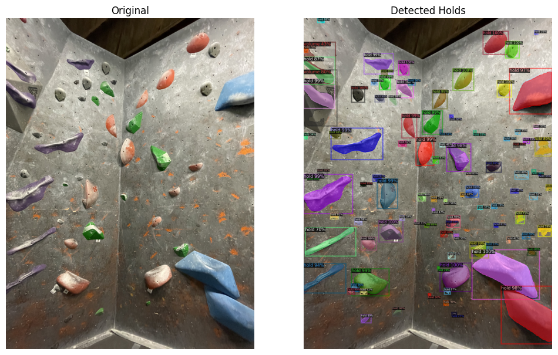
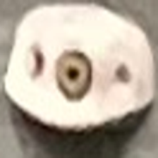
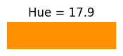
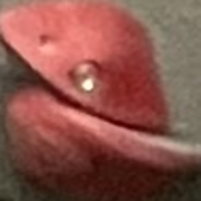
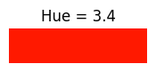
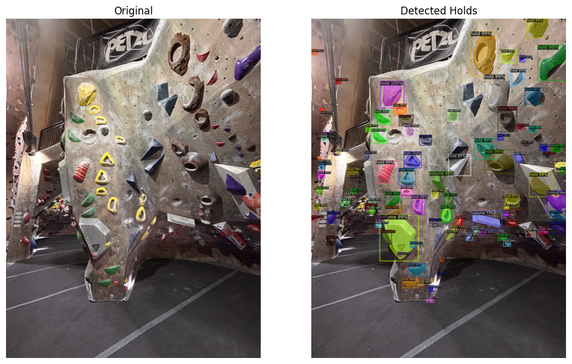

Climbing Route Segmentation

Introduction
We investigate classifying holds in an image to identify indoor climbing routes. Our pipeline segments holds, classifies hold type and orientation, represents color robustly (HSV), and groups holds into route candidates using K-means clustering.
Dataset
We curated 70 high-resolution gym images with ~1,600 annotated holds and 130 routes. Annotations include polygons, hold type, and route membership. Splits were made so no wall scene appears in multiple splits to force generalization.
Methods
- Segmentation: pretrained Detectron2-based model; outputs converted to COCO format.
- Hold classification: ResNet-50 backbone with two heads for hold type (7 classes) and orientation (5 classes).
- Color representation: HSV hue average to reduce chalk/shadow effects; saturation/value stripped.
- Route grouping: K-means using mean hue and hold type (min-max scaled).
Results
Segmentation recall on a five-image subset averaged ~0.985. Hold type accuracy ≈60% and orientation ≈70% on validation. K-means color-only grouping averaged ~0.756 vs ~0.655 when including hold type (results depend on image).
Figures
Example segmentation and classification visuals from the project:





Future Work
Explore clustering methods that combine numerical and categorical inputs, improve hold-type classifier, and increase annotation completeness to improve segmentation and downstream performance.
Repository: https://github.com/katie34634/ml_project_msai